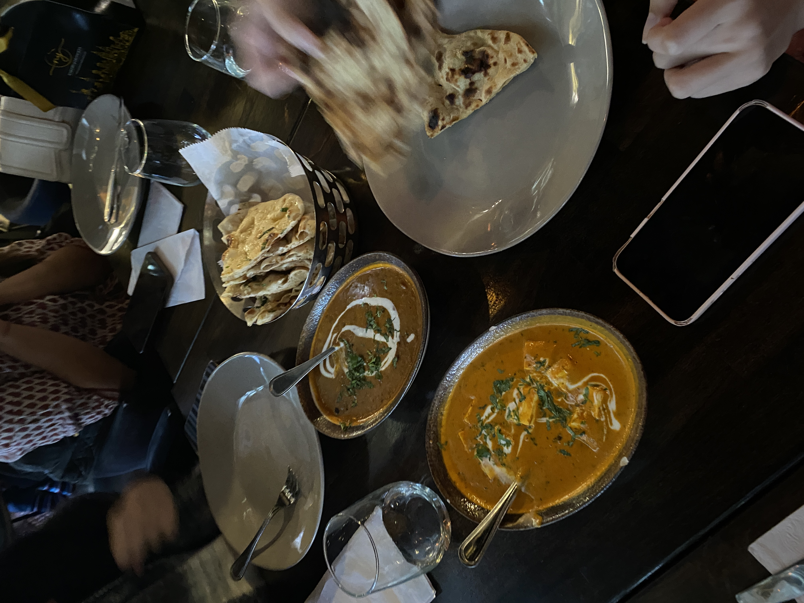
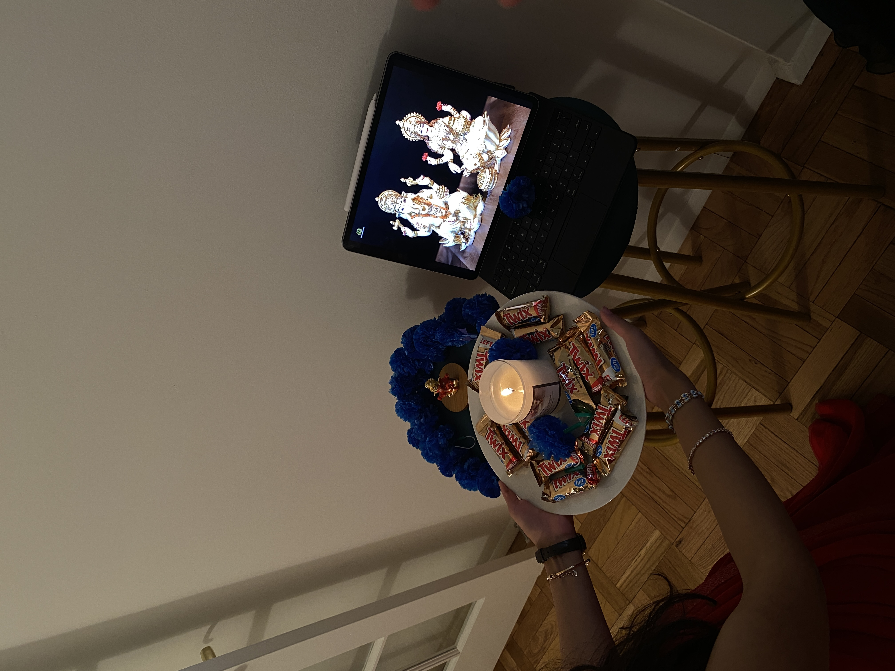
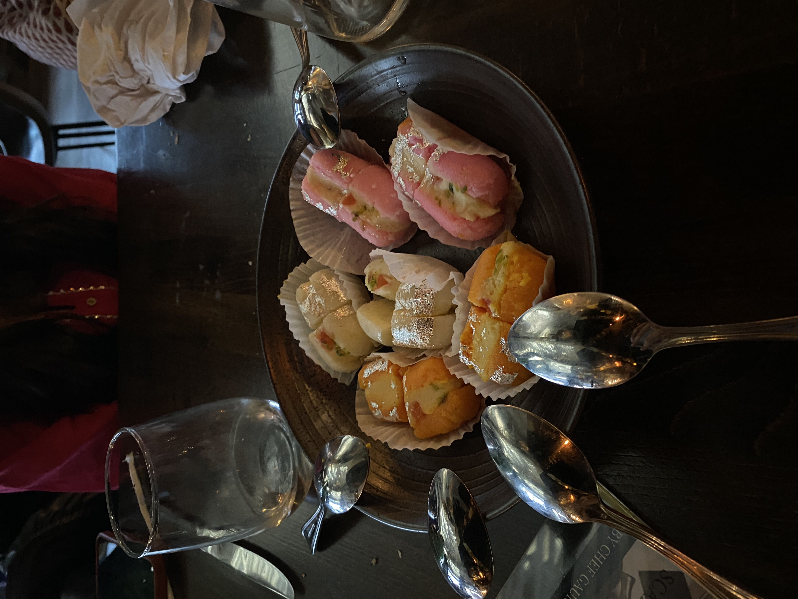
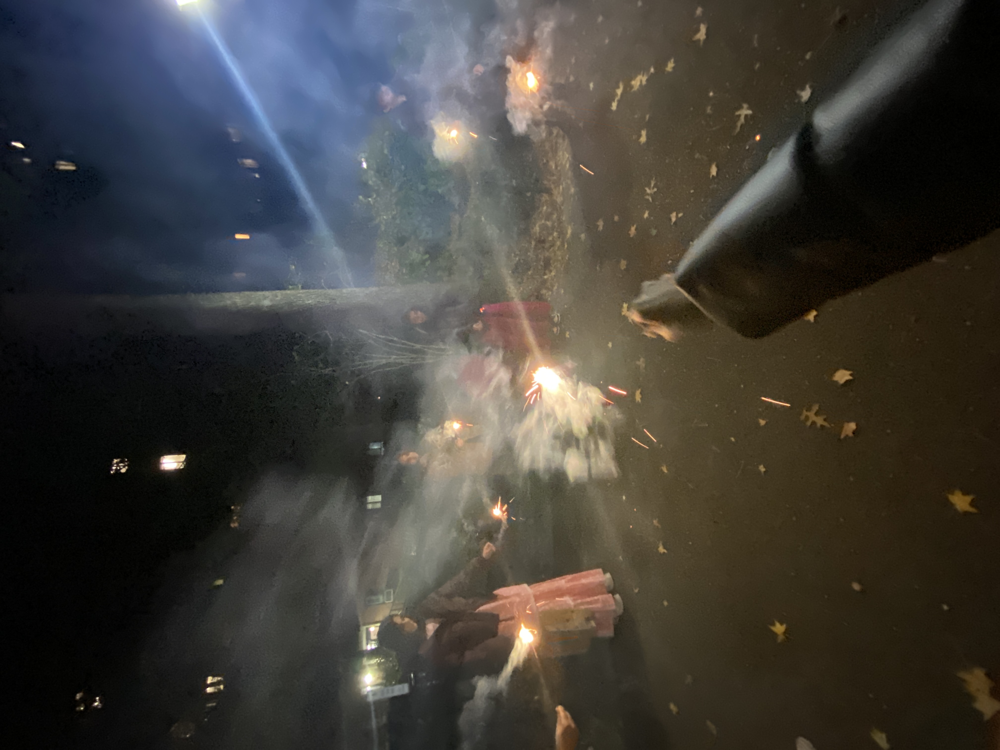

Diwali
Home
My cultural identity is a big part of who I am, so for this week’s entry I am going to be talking about Diwali (which I just celebrated this Sunday).
Diwali, also known as Deepavali, is one of the most widely celebrated festivals in Hinduism and is observed by millions of people across the world.
The word "Diwali" is derived from the Sanskrit word "Deepavali," which means "rows of lighted lamps." The festival lasts five days, and its
exact dates vary each year in the Gregorian calendar.
People lighting lamps for Diwali
Diwali is often referred to as the "Festival of Lights" because it involves the lighting of lamps and candles to symbolize the victory of light
over darkness and good over evil. Homes, temples, and public spaces are decorated with oil lamps, candles, and colorful lights.
Diwali involves various rituals, including the worship of different deities, depending on regional and family traditions. Lakshmi,
the goddess of wealth and prosperity, is a central figure in Diwali celebrations. Families perform puja (prayers) and seek the blessings of
deities for a prosperous and joyful year ahead.




Here are some pictures of how my friends and I celebrated Diwali this year! We went out for an Indian lunch, did our own little puja,
had Indian sweets and finished the day by lighting some ‘phuljaris’.